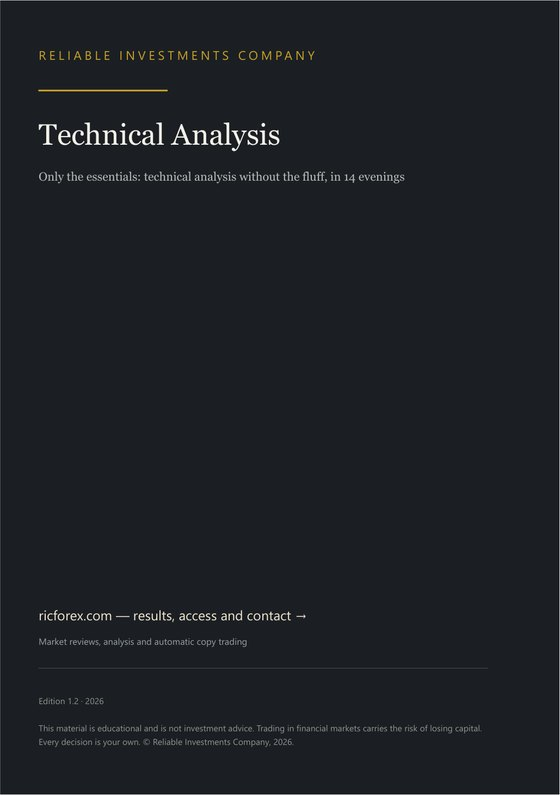

Technische Analyse.
Nur das Wesentliche.
Ein kostenloser Leitfaden von einem aktiven Trader. Ohne Ballast, ohne Versprechen vom schnellen Reichtum. Klicken Sie auf den Button, und das PDF wird sofort heruntergeladen.
Kostenlos · ohne Anmeldung

Technische Analyse · RICInhalt
- Trends, Unterstützung und Widerstand
- Candlestick-Muster und Chartformationen
- Indikatoren und wie man sie einfach hält
- Risikomanagement und Positionsgröße
- Wie man einen Broker auswählt
Artikel
Verständliche Artikel über Risiko, Drawdowns und wie Geld im Trading funktioniert.
Was ist Copy Trading und wie funktioniert es?
Copy Trading bedeutet: Die Trades eines erfahrenen Traders werden automatisch auf Ihrem Konto wiederholt. Er eröffnet einen Trade, und im selben…
Lesen →
Copy Trading: Erfahrungen und Betrug – so prüfen Sie einen Trader, bevor Sie sich verbinden
Suchen Sie nach „Copy Trading Erfahrungen“, finden Sie zwei Extreme: Begeisterung wie „Kapital in einem Monat verdoppelt“ und Aufschreie wie „Betrug,…
Lesen →
Wie viel kann man mit Copy Trading verdienen? Eine ehrliche Rechnung und die Risiken
„Wie viel kann man mit Copy Trading verdienen?“ Im Internet lautet die Antwort entweder „100% im Monat“ oder „nichts, alles Betrug“. Beide Extreme…
Lesen →
Gold-Copy-Trading (XAUUSD): So funktioniert es und warum Gold
Gold ist eines der beliebtesten Instrumente am Forex-Markt – und eines der schwierigsten, wenn man es selbst handelt. Es bewegt sich schnell,…
Lesen →
PAMM-Konto, Copy Trading oder verwaltetes Konto: Was passt zu Ihnen?
Wenn ein Profi für Sie am Markt handeln soll, gibt es meist drei Möglichkeiten: ein PAMM-Konto, ein verwaltetes Konto und Copy Trading. Von außen…
Lesen →
Gold-Signale oder Copy Trading: Was passt zu Ihnen?
Signale und Copy Trading werden oft verglichen, als müsste man sich für eines entscheiden. In Wirklichkeit sind es zwei gute Werkzeuge für…
Lesen →
Trading-Roboter für Gold: Expert Advisor im eigenen Terminal oder Copy Trading – was ist der Unterschied?
Ein Trading-Roboter ist ein Programm, das Trades selbstständig nach einem festgelegten Algorithmus eröffnet und schließt. Im Forex-Bereich heißen sie…
Lesen →
Was ein Drawdown für Ihr Geld bedeutet – einfach erklärt
Dieses Wort finden Sie in jedem ehrlichen Bericht und fast nie in unehrlichen. Es verdient eine einfache Erklärung, denn genau diese Zahl entscheidet…
Lesen →
Gebühr nur vom Gewinn: Warum das selten ist und wie Sie es prüfen
Beginnen wir mit einem Satz, der die ganze Branche erklärt: Die meisten Menschen in der Finanzwelt werden bezahlt, ob Sie Geld verdienen oder…
Lesen →
Festes Risiko pro Trade: Warum es wichtiger ist als die Rendite in Prozent
Bei der Wahl eines Handelssystems schauen die meisten fast immer auf die Rendite: „Wie viel Prozent im Monat?“ Das ist die sichtbarste Zahl und die…
Lesen →
Drawdown im Trading richtig lesen: Wann ist er normal?
Ein Drawdown ist der Abstand zwischen dem Höchststand des Kontos und seinem aktuellen Wert. Jedes System, das handelt, hat Drawdowns, und ein…
Lesen →
Beginnen Sie mit einer Frage
Schreiben Sie uns über Telegram oder WhatsApp: Wir empfehlen Ihnen einen Broker für Ihr Land und ein passendes Risikomodell, richten eine 14-tägige Demo ein und helfen Ihnen beim Start.
Auf Telegram schreiben